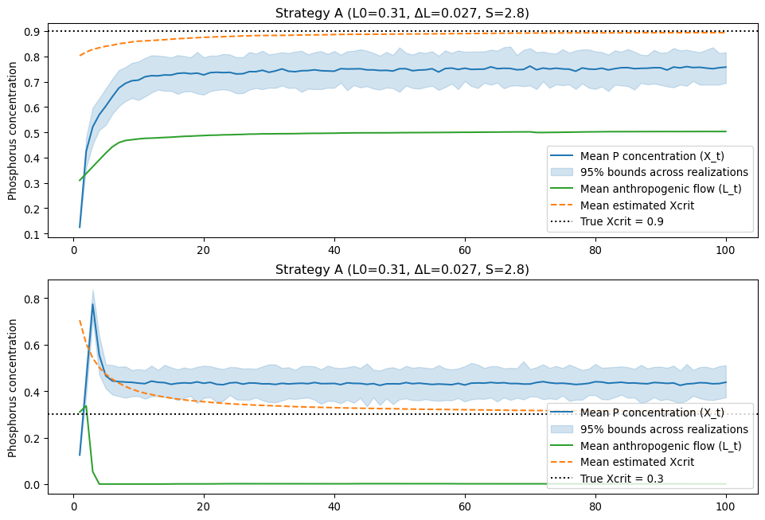

Code
import math
import numpy as np
from scipy.stats import truncnorm
import matplotlib.pyplot as plt
import seaborn as sns
# ------------------------
# Parameters (Table I / paper)
# ------------------------
B = 0.20 # retained phosphorus
b_bar = 0.10 # mean natural emissions
omega = 0.04 # std dev natural emissions
r = 0.25 # recycling jump when X >= Xcrit
gamma_obs = 0.05 # baseline observation noise std
lambda_learn = 0.10
q_noise = 2.0
initial_var = 0.02
alpha = 1.0
beta = 10.0
phi = 1.0 # table says 10 but the text says << beta
discount_rate = 0.03
# Strategy A (given)
strategy_A = {"L0": 0.31, "dL": 0.027, "S": 2.8}
# Simulation controls
T = 100 # years
Nsim = 100 # ensemble size for mean / quantiles (set e.g., 100 for demo)
SEED = 42
rng_global = np.random.default_rng(SEED)
# Initial estimate used by the town
initial_est_mean = 0.787
initial_est_var = initial_var
est_lower = .3
est_upper = .9
# ------------------------
# Helper functions implementing paper's learning and policy rules
# ------------------------
def gamma_t_func(Xt, Xcrit_true, gamma=gamma_obs, lam=lambda_learn, q=q_noise):
"""Equation (6): observation noise depends on proximity to threshold."""
if Xt >= Xcrit_true:
return float(gamma)
exponent = ((Xcrit_true - Xt) / lam) ** q
return min(gamma * math.exp(exponent), .1)
def kalman_update(mean_prev, var_prev, Zt, gamma_t):
"""Scalar Kalman-like update (Equation (5))"""
K = var_prev / (var_prev + gamma_t)
mean_new = mean_prev + K * (Zt - mean_prev)
var_new = (var_prev * gamma_t) / (var_prev + gamma_t)
return mean_new, var_new
def target_emission_level(estimated_Xcrit, Xt, Xcrit_true, S):
"""Equation (8) for L_target"""
if Xt < Xcrit_true:
target = (1.0 - B) * estimated_Xcrit - b_bar - S * omega
else:
target = estimated_Xcrit - B * Xt - r - b_bar - S * omega
return max(0.0, target)
def next_L(Lt, L_arg, dL):
"""Equation (7) update for L"""
return max(0.0, min(Lt + dL, L_arg))
def simulate_one_run_with_learning(Xcrit_true,
policy,
T=100,
rng=None,
est_mean_init=initial_est_mean, est_var_init=initial_est_var):
"""
Simulate one stochastic run with Kalman learning and the adaptive policy (L0, dL, S).
Returns time series dict with keys: X, L, est (estimated Xcrit), U (period utilities)
"""
if rng is None:
rng = np.random.default_rng()
L0 = float(policy["L0"])
dL = float(policy["dL"])
S = float(policy["S"])
X = np.empty(T)
L = np.empty(T)
Z = np.empty(T)
est = np.empty(T)
U = np.empty(T)
Xt = b_bar / (1.0 - B) # initial concentration per paper
L_prev = L0
L_curr = L0
est_mean = est_mean_init
est_var = est_var_init
for t in range(T):
# natural inflow
bt = rng.normal(b_bar, omega)
# update concentration (Eqn 1)
if Xt >= Xcrit_true:
Xt_next = B * Xt + r + bt + L_curr
else:
Xt_next = B * Xt + bt + L_curr
# observation for learning: Zt ~ N(Xcrit_true, gamma_t)
gamma_t = gamma_t_func(Xt, Xcrit_true)
Zt = rng.normal(loc=Xcrit_true, scale=gamma_t)
# Kalman update
est_mean, est_var = kalman_update(est_mean, est_var, Zt, gamma_t)
# utility for this period (using current Xt and current emissions L_curr)
reduction_cost = phi * max(0.0, L_prev - L_curr)
eutrophic_penalty = beta if Xt >= Xcrit_true else 0.0
U[t] = alpha * L_curr - reduction_cost - eutrophic_penalty
# record
X[t] = Xt
L[t] = L_curr
est[t] = est_mean
# compute target and update emissions
L_targ = target_emission_level(est_mean, Xt, Xcrit_true, S)
L_next = next_L(L_curr, L_targ, dL)
L_prev = L_curr
L_curr = L_next
Xt = Xt_next
return {"X": X, "L": L, "est": est, "U": U}
# ------------------------
# Run simulation
# ------------------------
all_X = np.zeros((Nsim, T))
all_L = np.zeros((Nsim, T))
all_est = np.zeros((Nsim, T))
all_U = np.zeros((Nsim, T))
all_X2 = np.zeros((Nsim, T))
all_L2 = np.zeros((Nsim, T))
all_est2 = np.zeros((Nsim, T))
all_U2 = np.zeros((Nsim, T))
# True Xcrits for this illustration
xcrit_list = [0.3, 0.4, 0.5, 0.6, 0.7, 0.8, 0.9]
n_x = len(xcrit_list)
# pre-allocate arrays: shape (n_x, Nsim, T)
all_X = np.zeros((n_x, Nsim, T))
all_L = np.zeros((n_x, Nsim, T))
all_est = np.zeros((n_x, Nsim, T))
all_U = np.zeros((n_x, Nsim, T))
# Pre-generate natural inflows bt_samples for each Monte Carlo run (CRN across Xcrit)
rng_global = np.random.default_rng(SEED)
bt_samples = rng_global.normal(loc=b_bar, scale=omega, size=(Nsim, T))
# Run ensemble
for i in range(Nsim):
# create per-run rng for observation draws (do not re-seed inside loop)
rng_i = np.random.default_rng(SEED + 1000 + i)
for j, xcrit in enumerate(xcrit_list):
out = simulate_one_run_with_learning(Xcrit_true=xcrit,
policy=strategy_A,
T=T,
rng=rng_i,
est_mean_init=initial_est_mean,
est_var_init=initial_est_var)
all_X[j, i, :] = out["X"]
all_L[j, i, :] = out["L"]
all_est[j, i, :] = out["est"]
all_U[j, i, :] = out["U"]
# ------------------------
# Plot results: mean concentration, emissions, and estimated Xcrit
# ------------------------
years = np.arange(1, T+1)
fig, ax = plt.subplots(2, 1, figsize=(12, 8))
# Top: concentration and estimated threshold
ax[0].plot(years, all_X[-1].mean(axis=0), color="C0", label="Mean P concentration (X_t)")
ax[0].fill_between(years,
np.percentile(all_X[-1], 5, axis=0),
np.percentile(all_X[-1], 95, axis=0),
alpha=.2,
color="C0", label="95% bounds across realizations")
ax[0].plot(years, all_L[-1].mean(axis=0), color="C2", label="Mean anthropogenic flow (L_t)")
ax[0].plot(years, all_est[-1].mean(axis=0), color="C1", linestyle="--", label="Mean estimated Xcrit")
ax[0].axhline(xcrit_list[-1], color="k", linestyle=":", label=f"True Xcrit = {xcrit_list[-1]}")
ax[0].set_ylabel("Phosphorus concentration")
ax[0].set_title("Strategy A (L0=0.31, ΔL=0.027, S=2.8)")
ax[0].legend()
ax[1].plot(years, all_X[0].mean(axis=0), color="C0", label="Mean P concentration (X_t)")
ax[1].fill_between(years,
np.percentile(all_X[0], 5, axis=0),
np.percentile(all_X[0], 95, axis=0),
alpha=.2,
color="C0", label="95% bounds across realizations")
ax[1].plot(years, all_L[0].mean(axis=0), color="C2", label="Mean anthropogenic flow (L_t)")
ax[1].plot(years, all_est[0].mean(axis=0), color="C1", linestyle="--", label="Mean estimated Xcrit")
ax[1].axhline(xcrit_list[0], color="k", linestyle=":", label=f"True Xcrit = {xcrit_list[0]}")
ax[1].set_ylabel("Phosphorus concentration")
ax[1].set_title("Strategy A (L0=0.31, ΔL=0.027, S=2.8)")
ax[1].legend(loc='lower right')